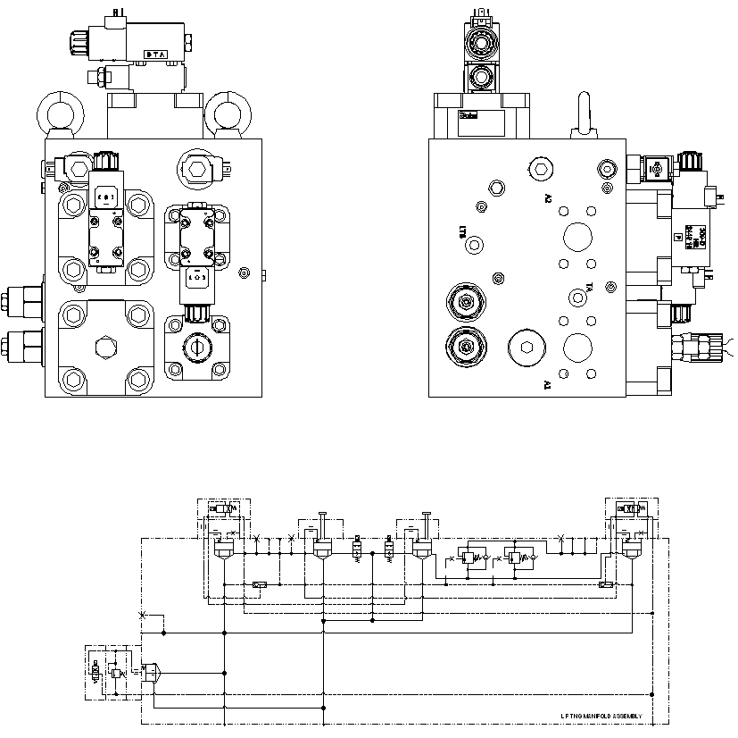

举升控制阀. · DUMP CONTROL VALVE
Блок клапанов управления подъемом
Общие сведения
Если не указано иное, номера позиций в скобках совпадают с номерами позиций на рис. 1.
Многоходовой блок клапанов управления подъемом состоит из нескольких вставных клапанов, устанавливается позади гидробака с внутренней стороны левого лонжерона рамы, вблизи гидроцилиндра подъема.
Блок клапанов управления подъемом в основном состоит из 9 частей: электромагнитный предохранительный клапан (1), электромагнитный клапан плавающего режима (2), вставной электромагнитный клапан подъема (3), вставной перепускной клапан подъема (4), электромагнитный клапан плавающего режима (5), вставной электромагнитный клапан опускания (6), вставной перепускной клапан опускания (7), уравновешивающий клапан (9), которые устанавливаются в клапанном блоке (8).
Управление
Основное назначение блока клапанов управления подъемом: переключение гидроцилиндра подъема между положениями «Подъем», «Удержание», «Опускание», «Плавающий режим» с помощью рычага управления подъемом, расположенного в кабине.
Подъем
Для подъема кузова оператор должен переместить рычаг управления подъемом в положение «Подъем» и удерживать в этом положении, при этом от рычага управления подъемом выдаются электрические сигналы, предназначенные для осуществления отдельных функций управления: а именно: отключить электромагнитные клапаны плавающего режима (2 и 5), выключить плавающий режим кузова; отключить электромагнитный клапан охлаждения, отключить подачу рабочей жидкости в систему охлаждения; подключить электромагнитный предохранительный клапан (1) в блоке клапанов управления подъемом, при этом масло под высоким давлением из насоса подъема не может проходить через электромагнитный предохранительный клапан (1) и не может осуществляться сброс нагрузки; подключить вставной клапан подъема (3), при этом масло под высоким давлением из насоса подъема проходит через вставной клапан подъема (3) и впускает в гидроцилиндр подъема. Более подробная информация о рычаге управления подъемом приведена в соответствующих разделах части «Электрическая система».
Действия в положении «Подъем»:
1. гидравлическое масло из насоса подъема проходит через фильтр высокого давления, затем сливается и поступает на вход «PV» блока клапанов управления подъемом, в этот момент электромагнитный предохранительный клапан (1) в блоке клапанов управления подъемом подключается [довести давлениеt открытия до 2400 фунтов/кв. дюйм (16550 кПа])];
2. масло под высоким давления из насоса подъема поступает в вставной клапан подъема (3), в этот момент электромагнит вставного клапана подъема (3) тоже находится в подключенном состоянии, гидравлическое масло проходит через основной золотник вставного клапана подъема (3), проходные отверстия (A1 и A2) и поступает на вход гидроцилиндра подъема, при этом кузов начинает подниматься;
3. в процессе подъема кузова масло под низким давлением из нагнетательной полости гидроцилиндра подъема проходит через отверстия (B1 и B2) блока клапанов управления подъемом, основной золотник вставного перепускного клапана подъема (4), блок клапанов управления подъемом (8) и возвращается в гидробак;
4. установочное давление открытия вставного перепускного клапана подъема (4) составляет 1400 фунтов/кв. дюйм (10000 кПа), когда кузов поднимается и выходит за пределы центра, данное давление позволяет постоянно держать перепускаемое масло под определенным давлением во избежание попадания воздуха вследствие чрезмерно быстрого выдвижения штока гидроцилиндра подъема, чтобы осуществлять управление скоростью выдвижения штока гидроцилиндр подъема.
Примечание:
1. Несмотря на то, что сам кузов не выходит за пределы центра, но карьерный самосвал все-таки имеет ряд функций защиты от выхода за пределы центра. Поскольку груз в кузове перемещается назад в процессе подъема кузова, появляется явление «выход за пределы центра», как будто кузов выходит за пределы центра.
2. При подъеме кузова отключается подача гидравлического масла в гидравлическую систему охлаждения.
Удержание
Для ограничения перемещения (подъема или опускания) кузова, оператор должен переместить рычаг управления подъемом в положение «Удержание». Более подробная информация о рычаге управления подъемом приведена в соответствующих разделах части «Электрическая система».
Действие в положении «Удержание»:
От рычага управления подъемом не выдаются электрические сигналы, в этот момент все электромагниты в блоке клапанов управления подъемом отключаются, основные золотники вставного клапана подъема (3), вставного клапана опускания (6), вставного перепускного клапана подъема (4), вставного перепускного клапана опускания (7) находятся в закрытом состоянии; гидравлическое масло из насоса подъема проходит через основной золотник электромагнитного предохранительного клапана (1) и возвращается в гидробак; электромагнитный клапан охлаждения подключается, рабочая жидкость поступает в систему охлаждения.
ПРИМЕЧАНИЕ: Когда рычаг управления подъемом находится в положении «Удержание», если температура гидравлического масла достигает значения, установленного датчиком, то гидравлическое масло из гидравлического радиатора возвращается в гидробак.
Опускание
Для опускания кузова оператор должен переместить рычаг управления подъемом в положение «Опускание» и удерживать в этом положении, от рычага управления подъемом выдаются электрические сигналы, предназначенные для управления соответствующими электромагнитами в блоке клапанов управления подъемом, таким образом осуществляется функция опускания кузова. Более подробная информация о рычаге управления подъемом приведена в соответствующих разделах части «Электрическая система».
Действия в положении «Опускание»:
1. гидравлическое масло из насоса подъема проходит через фильтр высокого давления, затем сливается и поступает на вход (PV) блока клапанов управления подъемом, в этот момент электромагнитный предохранительный клапан (1) в блоке клапанов управления подъемом подключается [довести давление открытия до 2400 фунтов/кв. дюйм (16.550 кПа)];
2. масло под высоким давлением из насоса подъема входит в вставной клапан опускания (6), в этот момент электромагнит вставного клапана опускания (6) тоже подключается, гидравлическое масло проходит через основной золотник вставного клапана опускания (6) и входит в перепускное отверстие гидроцилиндра подъема, кузов начинает опускаться под действием динамических сил;
3. в процессе опускания кузова масло под низким давлением из всасывающей полости гидроцилиндра подъема проходит через основной золотник вставного перепускного клапана опускания (7), блок клапанов управления подъемом (8) и возвращается в гидробак;
Примечание:
1. Поскольку гидроцилиндры подъема отличаются внутренней конструкцией, только двухступенчатый гидроцилиндр позволяет осуществлять опускание под действием динамических сил в процессе опускания, т. е. шток гидроцилиндра втягивается под действием гидравлического масла, одноступенчатый гидроцилиндр только дает возможность осуществлять опускание под действием собственного веса кузова.
2. При подъеме кузова отключается подача гидравлического масла в гидравлическую систему охлаждения.
Плавающий режим
В момент полного соприкосновения кузова с рамой оператор должен переместить рычаг управления подъемом в нейтральное положение. При этом масло из насоса подъема проходит через электромагнитный предохранительный клапан (1) в блоке клапанов управления подъемом и непосредственно возвращается в гидробак; в то же время электромагнитные клапаны плавающего режима (2 и 5) в блоке клапанов управления подъемом подключаются, присоединить перепускное отверстие гидроцилиндра подъема к гидробаку во избежание интенсивного перемещения гидроцилиндра подъема под действием инерции гидроцилиндра подъема в процессе транспортирования.
В случае невозможности опускания поднятого кузова вследствие неисправности системы подъема, можно осуществлять опускание кузова в плавающем режиме путем нажатии кнопки принудительного включения плавающего режима на рычаге управления подъемом. Более подробная информация о рычаге управления подъемом приведена в соответствующих разделах части «Электрическая система».
ВАЖНОЕ ПРИМЕЧАНИЕ: Рычаг управления подъемом и блок клапанов управления подъемом должны находиться в плавающем положении в процессе работы карьерного самосвала.
Техническое обслуживание и осмотр
Периодическое техническое обслуживание должно включать следующие виды работ:
1. Проверить все вставные клапаны и пробки на наличие утечек масел, в случае обнаружения проблем, следует своевременно устранить проблемы.
2. Проверить все электромагниты и разъем жгута проводов на наличие ослабления и выпадения, в случае обнаружения проблем, следует своевременно устранить проблемы.
3. Проверить блок клапанов на наличие трещин, в случае обнаружения трещин, следует своевременно заменить.
Функциональные испытания
Функциональные испытания системы производятся в следующем порядке:
1. Остановить автомобиль в безопасном месте, включить стояночный тормоз, подложить клинья под колеса во избежание случайного перемещения автомобиля.
2. Выключить двигатель и полностью сбросить остаточное давление в системе, убедиться в нахождении рычага управления подъемом в нейтральном положении, полном соприкосновении кузова с рамой.
3. Убедиться в правильном прохождении испытаний и регулирования системы подъема.
4. Проверить все шланги и штуцеры, затянуть их в соответствии с порядком, указанным в части «Дополнения».
5. Убедиться в применении указанного гидравлического масла и правильном уровне масла в гидробаке карьерного самосвала.
6. Если система электропривода была установлена, то при перемещении рычага селектора в положение «Движение вперед» или «Задний ход» следует принять меры, не допускающие приведение в действие системы привода карьерного самосвала.
7. Испытания электромагнитного предохранительного клапана (1) в блоке клапанов управления подъемом производятся в следующем порядке:
a. Убедиться в нахождении рычага селектора в нейтральном положении и работе двигателя на низких оборотах холостого хода.
b. Если работоспособность системы подъема или компонентов или состояние системы являются неопределенными при работе, то после многократного повторения процедур подъема и опускания кузова (см. ПРИМЕЧАНИЕ ниже) следует удалить остаточный воздух из системы, нельзя принудительно дать гидроцилиндру подъема работать на полном ходу.
Примечание:
Рекомендуется выполнить эти действия в следующем порядке:
1. Постепенно поднимать кузов по 2-3 дюйма (0,6-0,9 м).
2. Удерживать рычаг управления подъемом в положении «Подъем» или «Опускание», расстояние между кузовом и рамой должно быть менее 2-3 дюйма (0,6-0,9 м).
c. Поднимать кузов на максимальную высоту.
d. Удерживать рычаг управления подъемом в этом положении «Подъем», проводить контрольный осмотр:
Давление в системе подъема (измерить давление в системе подъема манометром в контрольной точке блока клапанов управления подъемом, следует присоединить к манометру при неработающем двигателе) должно быть 2350-2450 фунтов/кв. дюйм (16205-16895 кПа), если давление не находится в этом диапазоне, то необходимо отрегулировать установочное давление срабатывания электромагнитного предохранительного клапана до требуемой нормы.
e. Отпустить рычаг управления подъемом, дать ему возвращаться в нейтральное положение.
f. Переместить рычаг управления подъемом в положение «Опускание», опустить кузов до полного опускания на раму.
g. Удерживать рычаг управления подъемом в этом положении «Опускание», проводить контрольный осмотр:
Давление в системе подъема (измерить давление в системе подъема манометром в контрольной точке блока клапанов управления подъемом, следует присоединить к манометру при неработающем двигателе) должно быть 1450-1550 фунтов/кв. дюйм (10010-10685 кПа), иначе необходимо отрегулировать установочное давление срабатывания электромагнитного предохранительного клапана до требуемой нормы.
h. В диапазоне подъема кузова завершить 5 циклов вышеуказанных испытаний при работе двигателя на номинальных оборотах.
8. Завершить испытания.
Отсоединить манометр от входа блока клапанов управления подъемом.
Гидравлическая система – блок клапанов управления подъемом
050-0060
Гидравлическая система – блок клапанов управления подъемом
050-0060
2
3
Гидравлическая система – блок клапанов управления подъемом
050-0060
1
5
Дополнения - Масса компонентов
200-0090
Дополнения - Масса компонентов
200-0090
40
3
Дополнения - Масса компонентов
200-0090
Спецификация1Электромагнитный предохранительный клапан5Электромагнитный клапан плавающего режима2Электромагнитный клапан плавающего режима6Вставной клапан опускания3Вставной клапан подъема7Вставной перепускной клапан опускания4Вставной перепускной клапан подъема8Блок клапанов9Уравновешивающий клапан Рис. 1. Принципиальная схема системы подъема
4
8
6
B1 B2
7
2
5
7
4
A1 A2
3
1
LP
T3
T2
PV
8
6
5
3
2
1
Иллюстрации
